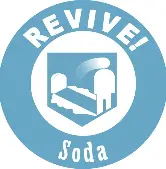

Permanently boosts your maximum health by 100 points.

When you are downed, you must perform a quick action typically killing an enemy or avoiding damage for about 5 seconds — to trigger the self‑revive.
Double Tap reduces the time between successive shots, effectively boosting your weapon’s rate of fire.
When you dive to prone (or slide into an enemy), you create an explosion that damages nearby zombies.
You are immune to all explosive damage taken from grenades, traps, or other sources.
You can cycle through ammo magazines more quickly.
You can restore your armor plates at a quicker rate after taking damage.
You can Run Faster And for a longer time.